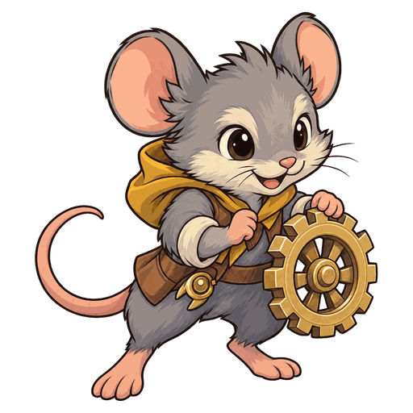

Attiva
Spararotelle
Spara un proiettile al bersaglio attuale entro 4 caselle. Quando raggiunge il bersaglio, il proiettile infligge danni fisici pari a 670% dell'attacco.

No.131
Tiratore Stagione 1
Spara al bersaglio attuale un proiettile che infligge danni fisici dopo un certo tempo, e quando resta fermo la gittata dei suoi attacchi base aumenta.
| Statistica | Lv.1 | Lv.11 |
|---|---|---|
| Salute | 400 | 1618 |
| Attacco | 20 | 81 |
| Potere magico | 20 | 81 |
| Armatura | 10 | 10 |
| Resistenza magica | 10 | 10 |
| Intervallo d'attacco | 0,67 s | 0,67 s |
| Gittata | A distanza · 4 caselle | A distanza · 4 caselle |
| Mana | 0 / 75 | 0 / 75 |
Salute, attacco e potere magico aumentano del 15% a ogni livello (fino al Lv.11).
Attiva
Spara un proiettile al bersaglio attuale entro 4 caselle. Quando raggiunge il bersaglio, il proiettile infligge danni fisici pari a 670% dell'attacco.
Passiva
Se resta fermo per 2 s, la gittata dei suoi attacchi base aumenta di 1 casella. L'effetto termina subito quando inizia a muoversi.